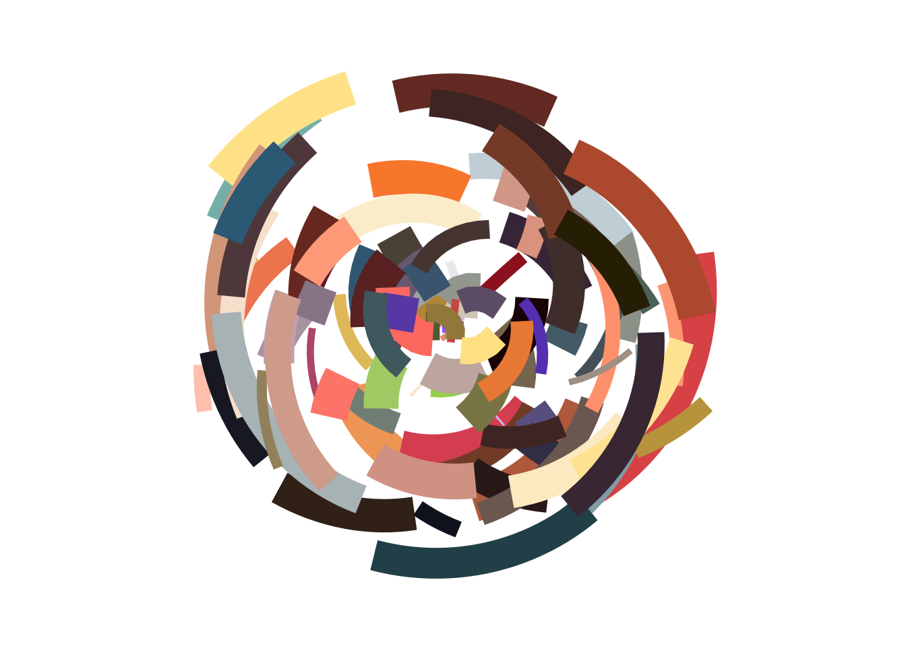
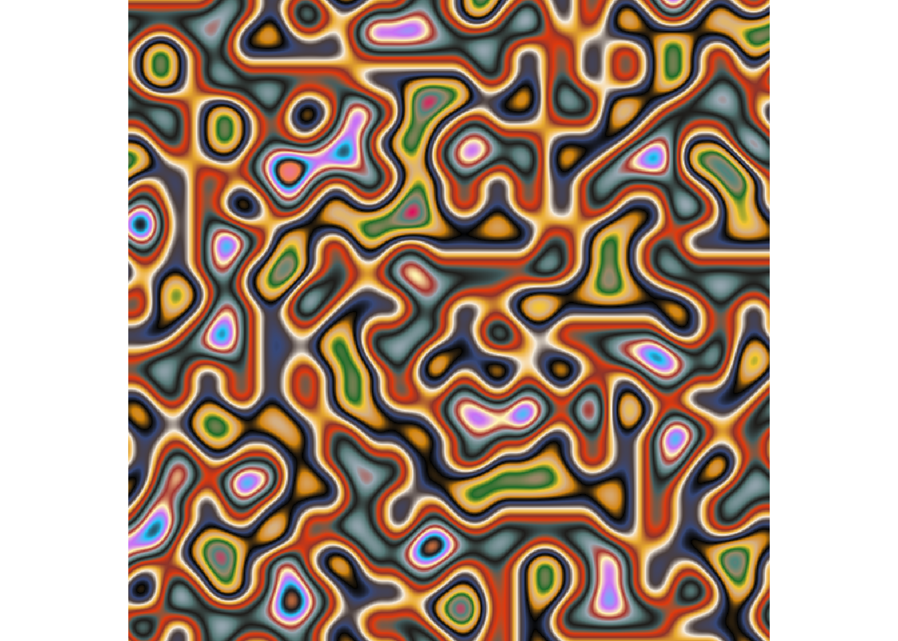
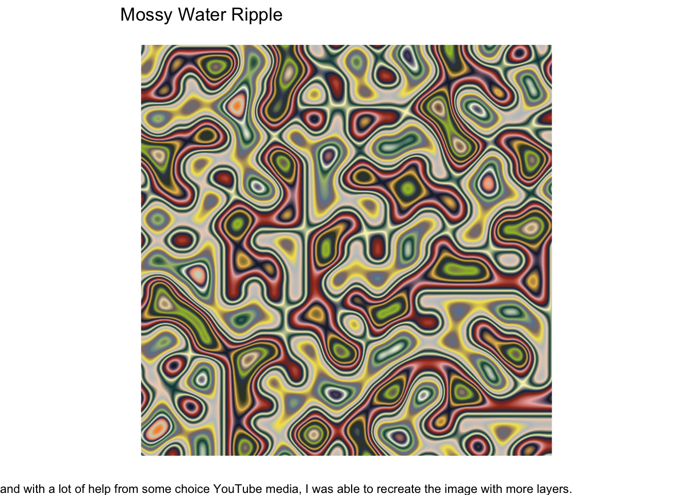

# load in packages
library(ggplot2)
library(tibble)
library(scales)
library(ggthemes)
library(dplyr)
library(purrr)
library(tidyr)
library(ambient)
library(tictoc)
library(gifski)
library(purrr)
library(ggfx)
library(flametree)
library(ggforce)Gen Art
GitHub Link: https://github.com/michaelppaull/art-from-code.git
Setup:
# inspect mpg data
mpg# A tibble: 234 × 11
manufacturer model displ year cyl trans drv cty hwy fl class
<chr> <chr> <dbl> <int> <int> <chr> <chr> <int> <int> <chr> <chr>
1 audi a4 1.8 1999 4 auto… f 18 29 p comp…
2 audi a4 1.8 1999 4 manu… f 21 29 p comp…
3 audi a4 2 2008 4 manu… f 20 31 p comp…
4 audi a4 2 2008 4 auto… f 21 30 p comp…
5 audi a4 2.8 1999 6 auto… f 16 26 p comp…
6 audi a4 2.8 1999 6 manu… f 18 26 p comp…
7 audi a4 3.1 2008 6 auto… f 18 27 p comp…
8 audi a4 quattro 1.8 1999 4 manu… 4 18 26 p comp…
9 audi a4 quattro 1.8 1999 4 auto… 4 16 25 p comp…
10 audi a4 quattro 2 2008 4 manu… 4 20 28 p comp…
# ℹ 224 more rowsExercises
Ex I:
mpg |>
ggplot(aes(displ, cty, colour = class)) +
geom_jitter(show.legend = FALSE, size = 3, width = 0, height = 1000) +
geom_jitter(show.legend = FALSE, size = 1, colour = "orange", width = 3.14159) +
coord_polar() +
theme_void() +
scale_color_brewer()Ex II:
set.seed(1)
n <- 50
dat <- tibble(
x0 = runif(n),
y0 = runif(n),
x1 = x0 + runif(n, min = -.2, max = .2),
y1 = y0 + runif(n, min = -.2, max = .2),
shade = runif(n),
size = runif(n)
)
dat# A tibble: 50 × 6
x0 y0 x1 y1 shade size
<dbl> <dbl> <dbl> <dbl> <dbl> <dbl>
1 0.266 0.478 0.327 0.523 0.268 0.762
2 0.372 0.861 0.313 0.884 0.219 0.933
3 0.573 0.438 0.481 0.370 0.517 0.471
4 0.908 0.245 1.11 0.226 0.269 0.604
5 0.202 0.0707 0.255 0.0709 0.181 0.485
6 0.898 0.0995 0.784 -0.0282 0.519 0.109
7 0.945 0.316 0.796 0.328 0.563 0.248
8 0.661 0.519 0.652 0.349 0.129 0.499
9 0.629 0.662 0.799 0.573 0.256 0.373
10 0.0618 0.407 0.101 0.292 0.718 0.935
# ℹ 40 more rowspolar_art <- function(seed, n, palette) {
# set the state of the random number generator
set.seed(seed)
# data frame containing random values for
# aesthetics we might want to use in the art
dat <- tibble(
x0 = runif(n),
y0 = runif(n),
x1 = x0 + runif(n, min = -.2, max = .2),
y1 = y0 + runif(n, min = -.2, max = .2),
shade = runif(n),
size = runif(n)
)
# plot segments in various colours, using
# polar coordinates and a gradient palette
dat |>
ggplot(aes(
x = x0,
y = y0,
xend = x1,
yend = y1,
colour = shade,
size = size
)) +
geom_segment(show.legend = FALSE) +
coord_polar() +
scale_y_continuous(expand = c(0, 0)) +
scale_x_continuous(expand = c(0, 0)) +
scale_colour_gradientn(colours = palette) +
scale_size(range = c(0, 10)) +
theme_void()
}polar_art(seed = 2,
n = (70),
palette = c("#B4EEB4", "#FFFFF0", "#CD69C9")
)
Ex III:
# the original function from the first session
sample_canva <- function(seed = NULL) {
if(!is.null(seed)) set.seed(seed)
sample(ggthemes::canva_palettes, 1)[[1]]
}
# the extended function used in later sessions
sample_canva2 <- function(seed = NULL, n = 4) {
if(!is.null(seed)) set.seed(seed)
sample(ggthemes::canva_palettes, 1)[[1]] |>
(\(x) colorRampPalette(x)(n))()
}sample1 <- sample_canva()
show_col(sample1)
# Define a function called sample_named_colours that takes an integer n as input
sample_named_colours <- function(n) {
# Use the sample function to randomly select n distinct colors from the set of named colors
sample(colours(distinct = TRUE), n)
}
# Generate a random palette of 5 colors using the sample_named_colours function
random_palette <- sample_named_colours(5)
# Create a polar art plot using the generated random palette
polar_art(seed = 32,
n = 314.15924,
palette = random_palette)
sample_600_colours <- function(n) {
sample(unlist(ggthemes::canva_palettes), n)
}randy <- sample_600_colours(15)
polar_art(seed = 47,
n = 121,
palette = randy)Ex IV:
# copied this function to check it out
sample_canva <- function(seed = NULL) {
if(!is.null(seed)) set.seed(seed)
sample(ggthemes::canva_palettes, 1)[[1]]
}
sample_data <- function(seed = NULL, n = 100){
if(!is.null(seed)) set.seed(seed)
dat <- tibble(
x0 = runif(n),
y0 = runif(n),
x1 = x0 + runif(n, min = -.2, max = .2),
y1 = y0 + runif(n, min = -.2, max = .2),
shade = runif(n),
size = runif(n),
shape = factor(sample(0:22, size = n, replace = TRUE))
)
}
polar_styled_plot <- function(data = NULL, palette) {
ggplot(
data = data,
mapping = aes(
x = x0,
y = y0,
xend = x1,
yend = y1,
colour = shade,
size = size
)) +
coord_polar(clip = "off") +
scale_y_continuous(
expand = c(0, 0),
limits = c(0, 1),
oob = scales::oob_keep
) +
scale_x_continuous(
expand = c(0, 0),
limits = c(0, 1),
oob = scales::oob_keep
) +
scale_colour_gradientn(colours = palette) +
scale_size(range = c(0, 10)) +
theme_void() +
guides(
colour = guide_none(),
size = guide_none(),
fill = guide_none(),
shape = guide_none()
)
}dat <- sample_data(n = 100, seed = 1)
pal <- sample_600_colours(50)
# messing around with this function
polar_styled_plot(data = dat, palette = pal) + geom_segment()
# I want to generate a mandelbrot visualization
# Utilizing what we know about the mandelbrot set and its relationship with the complex plane
# we will try to generate a function to make a decently zoomed out view of the set while
# messing around with some random colors
# Define the function to generate Mandelbrot set visualization
my_styled_plot <- function(n, palette) {
# Create a grid of complex numbers
x <- seq(-2.5, 1.5, length.out = 800) # sequence for the real part
y <- seq(-2, 2, length.out = 800) # Sequence for the Imaginary part
c <- outer(x, y*1i, "+") # create a grid o complex numbers
# Initialize variables
z <- matrix(0, nrow = 800, ncol = 800) # Matrix to hold the complex values
k <- matrix(0, nrow = 800, ncol = 800) # Matrix to count iterations
# Mandelbrot iteration
for (i in 1:n) { # loop for the number of iterations
mask <- Mod(z) <= 2 # Mask to check if the modulus of z is less than or equal to 2
z[mask] <- z[mask]^2 + c[mask] # Update z based on the Mandelbrot formula
k[mask] <- k[mask] + 1 # Increment iteration count where the mask is true
}
# Prepare data for plotting
data <- expand.grid(x = x, y = y) # Create a data frame from the grid
data$k <- as.vector(k) # Flatten the iteration count matrix and add to the data frame
# Plot the Mandelbrot set
ggplot(data, aes(x = x, y = y, fill = k)) + # Define aesthetics for the plot
geom_raster(interpolate = TRUE) + # Use raster graphics to plot
scale_fill_gradientn(colours = palette) + # Aply the color palette
theme_void() + # Use a theme with no background or axes
theme(legend.position = "none") # Remove the legend
}mandel <- sample_600_colours(5) # generate some colors to use
my_styled_plot(n = 100,
palette = mandel) # call the function and specify num iterations and colors to rampArt of Choice:
Spatial Noise Tricks
# Generate 800 numbers between 0 and 1 for the x-coordinates
x_coords <- seq(from = 0, to = 1, length.out = 800)
# Generate 800 numbers between 0 and 1 for the y-coordinates
y_coords <- seq(from = 0, to = 1, length.out = 800)
# Create a grid with the x and y coordinates
canvas <- long_grid(x = x_coords, y = y_coords)
# Apply the perlin noise function to the grid to generate a 'paint' column
canvas <- canvas |>
mutate(paint = gen_perlin(x, y, frequency = 10, seed = 1234))
# Display the resulting canvas with the "perlin" nose applied
canvas# A tibble: 640,000 × 3
x y paint
<dbl> <dbl> <dbl>
1 0 0 0
2 0 0.00125 0.0125
3 0 0.00250 0.0249
4 0 0.00375 0.0370
5 0 0.00501 0.0489
6 0 0.00626 0.0604
7 0 0.00751 0.0713
8 0 0.00876 0.0817
9 0 0.0100 0.0915
10 0 0.0113 0.101
# ℹ 639,990 more rows# Create a ggplot object with the canvas data, mapping x and y coordinates to the plot
# and using the 'paint' values for the fill aesthetic
art <- ggplot(canvas, aes(x, y, fill = paint)) +
# Use the geom_raster function to create a raster plot, which helps for visualizing grids
geom_raster(show.legend = FALSE) # ide the legend for a cleaner look
# Display the plot
art# sadd a void theme to remove all the background, grid lines, and axes from the plot
art +
theme_void() + # Apply a theme with no background or axes
coord_equal() # Ensure that one unit on the x-axis is the same length as one unit on the y-axis
art +
theme_void() + # Apply a theme with no background or axes
coord_equal() +
scale_x_continuous(expand = c(0, 0)) +
scale_y_continuous(expand = c(0, 0)) +
scale_fill_gradientn(colours = sample_600_colours(25)) # reuse sample 600 function to grab a bunch of colors
Iteration, Tiles, and Pixels
tree <- flametree_grow(
seed = 1,
time = 9,
angle = c(-15, 15, 30)
)
tree# A tibble: 3,069 × 12
coord_x coord_y id_tree id_time id_path id_leaf id_pathtree id_step seg_deg
<dbl> <dbl> <int> <int> <int> <lgl> <chr> <int> <dbl>
1 -0.429 0 1 1 1 FALSE 1_1 0 90
2 -0.429 0.5 1 1 1 FALSE 1_1 1 90
3 -0.429 1 1 1 1 FALSE 1_1 2 90
4 -0.429 1 1 2 2 FALSE 1_2 0 75
5 -0.429 1.45 1 2 2 FALSE 1_2 1 75
6 -0.196 1.87 1 2 2 FALSE 1_2 2 75
7 -0.429 1 1 2 3 FALSE 1_3 0 75
8 -0.429 1.3 1 2 3 FALSE 1_3 1 75
9 -0.274 1.58 1 2 3 FALSE 1_3 2 75
10 -0.196 1.87 1 3 4 FALSE 1_4 0 105
# ℹ 3,059 more rows
# ℹ 3 more variables: seg_len <dbl>, seg_col <dbl>, seg_wid <dbl>tree |>
flametree_plot(
background = "#222222",
palette = c("#ffffff", "#f652a0")
)# filter the tree data to get only the leaves
leaf <- tree |> filter(id_leaf == TRUE)
# create the trunk using geom_bezier
trunk <- geom_bezier(
mapping = aes(coord_x, coord_y, group = id_pathtree, size = seg_wid), # map coordinates and sizes
data = tree, # use tree data
lineend = "round", # round line ends
colour = "#555555", # set color to gray
show.legend = FALSE # hide the legend
)
# create the leaves using geom_point
leaves <- geom_point(
mapping = aes(coord_x, coord_y), # map coordinates
data = leaf, # use leaf data
size = 1.3, # set point size
stroke = 0, # remove stroke around points
colour = "#e38b75" # set color to a pinkish hue
)
# function to create a polygon layer with specified x, y coordinates, fill color, and transparency
polygon_layer <- function(x, y, fill = "white", alpha = .5) {
geom_polygon(aes(x, y), fill = fill, alpha = alpha)
}
# create a black triangle
triangle <- polygon_layer(
x = c(-4, 2, 2),
y = c(0, 0, 6),
fill = "black",
alpha = 1
)
# base ggplot object with void theme and equal coordinates scaling
base <- ggplot() +
theme_void() + # no background, axes, or grid lines
coord_equal(xlim = c(-3, 1), ylim = c(1, 5)) + # set limits for x and y axes
scale_x_continuous(expand = c(0, 0)) + # remove padding around x axis
scale_y_continuous(expand = c(0, 0)) + # remove padding around y axis
scale_size_identity(guide = guide_none()) # use size as-is, no guide
# plot the base with the tree and blend it with the triangle using xor blend type
base +
as_group(trunk, leaves, id = "tree") + # group trunk and leaves as tree
with_blend(triangle, "tree", blend_type = "xor") # blend triangle with tree using xorPut It All Together
Piece I
I was inspired to make this when messing around with some of the spatial noise code. I found that using the “sample_600_colors()” function we generated in an earlier part worked very well with the noise. Instead of usung only a few colors to distinguish between the regions, I thought I’d try to spice it up by adding more colors. I didnt expect for it to clear up and not look as “fuzzy”, but it ended up making a very interesting and water-like illustration. Then I cleaned up the code a little bit and with a lot of help from some choice YouTube media, I was able to recreate the image with more layers.
# Function to generate a cool pattern using spatial noise
generate_pretty_pattern <- function(seed, size, frequency, palette) {
# Set seed for reproducibility
set.seed(seed)
# Create a grid of coordinates
grid <- long_grid(seq(0, 1, length.out = size), seq(0, 1, length.out = size))
# Generate Perlin noise
grid <- grid %>% mutate(noise = gen_perlin(x, y, frequency = frequency))
# Create a plot with the noise data
plot <- ggplot(grid, aes(x = x, y = y, fill = noise)) +
geom_raster(interpolate = TRUE) +
scale_fill_gradientn(colours = palette) +
theme_void() +
coord_equal() +
ggtitle("Mossy Water Ripple") + # Add the title
labs(caption = "I was inspired to make this when messing around with some of the spatial noise code. I found that using the sample_600_colors() function we generated in an earlier part worked very well with the noise. Instead of usung only a few colors to distinguish between the regions, I thought I'd try to spice it up by adding more colors. I didnt expect for it to clear up and not look as fuzzy, but it ended up making a very interesting and water-like illustration. Then I cleaned up the code a little bit and with a lot of help from some choice YouTube media, I was able to recreate the image with more layers.") + # Add the caption
theme(legend.position = "none") # Remove the legend
# Display the plot
print(plot)
}
# Example usage
generate_pretty_pattern(seed = 123, size = 800, frequency = 10, palette = sample_600_colours(25))
# Function to generate a pretty pattern using Worley noise
generate_worley_pattern <- function(seed, size, palette) {
# Set seed for reproducibility
set.seed(seed)
# Create a grid of coordinates
grid <- long_grid(seq(0, 1, length.out = size), seq(0, 1, length.out = size))
# Generate Worley noise
grid <- grid %>% mutate(noise = gen_worley(x, y, value = "distance", seed = seed))
# Create a plot with the noise data
plot <- ggplot(grid, aes(x = x, y = y, fill = noise)) +
geom_raster(interpolate = TRUE) + # use raster graphics with interpolation
scale_fill_gradientn(colours = palette) + # apply the color palette
theme_void() + # use a theme with no background, axes, or grid lines
coord_equal() + # ensure equal scaling of x and y axes
theme(legend.position = "none") # Remove the legend
# Display the plot
print(plot)
}
# Example usage
generate_worley_pattern(seed = 123, size = 800, palette = sample_600_colours(100)) # Generate and display the pattern# Function to generate a Julia set
generate_julia_set <- function(re_c, im_c, size, iter, palette) {
# Create a grid of complex numbers
x <- seq(-1.5, 1.5, length.out = size) # x values from -1.5 to 1.5
y <- seq(-1.5, 1.5, length.out = size) # y values from -1.5 to 1.5
c <- complex(real = re_c, imaginary = im_c) # create complex number c
# Initialize the grid
z <- outer(x, y * 1i, "+") # grid of complex numbers
k <- matrix(0, nrow = size, ncol = size) # matrix to count iterations
# Julia set iteration
for (i in 1:iter) { # loop through iterations
mask <- Mod(z) <= 2 # mask to find points within the circle of radius 2
z[mask] <- z[mask]^2 + c # apply Julia set formula
k[mask] <- k[mask] + 1 # count iterations
}
# Prepare data for plotting
data <- expand.grid(x = x, y = y) # create a data frame
data$k <- as.vector(k) # add iteration counts to data frame
# Create the Julia set plot
plot <- ggplot(data, aes(x = x, y = y, fill = k)) + # set up plot
geom_raster(interpolate = TRUE) + # plot with smooth colors
scale_fill_gradientn(colours = palette) + # use the color palette
theme_void() + # remove background and axes
coord_equal() + # make x and y scales equal
theme(legend.position = "none") # remove legend
# Display the plot
print(plot) # show the plot
}
# Example usage
generate_julia_set(
re_c = -0.8, # real part of c
im_c = 0.156, # imaginary part of c
size = 800, # size of the grid
iter = 200, # number of iterations
palette = sample_600_colours(33) # color palette
)